Imagem: Dire WolfConstrução de baralho · Alocação de trabalhadores
Como jogar Duna: Imperium
Para quem nunca jogou1 a 4 jogadores60 a 120 min14+Edição Galápagos (Asmodee)
· Redação Elite Boardgamers
Resumo em 1 minuto
Você joga cartas para mandar Agentes aos espaços do tabuleiro, revela o resto da mão para comprar cartas e lutar no Conflito da rodada, e vence quem tiver mais Pontos de Vitória quando alguém chegar a 10.
Cada carta jogada manda um Agente a um espaço vazio com o mesmo ícone; o custo do espaço se paga antes.
No Turno de Revelar, a parte de baixo das cartas guardadas dá Persuasão para adquirir cartas e espadas para o Conflito, onde cada tropa vale 2.
Pontos vêm de Influência com as Facções, Alianças, Conflitos e Intrigas; a partida acaba ao fim da rodada em que alguém faz 10 ou quando o Baralho de Conflito acaba.
Como você aprende: 4 etapas, da mesa montada à contagem de pontosLeitura do essencial: cerca de 11 min
À vista, só o essencial para jogar. O que abre com + é explicação, exemplo, exercício ou regra de caso especial: abra quando precisar.
Montar a mesa passo a passo
A montagem segue as p. 4 e 5 do manual, na mesma ordem e com as mesmas letras, de A a H. É igual para 3 e 4 jogadores, salvo o disco de Pontos, que começa no 1 com 4 jogadores e no 0 com 3 (passo 15). Com 2 jogadores entra a Casa Hagal, um rival automático, com preparação própria (no fim desta seção); o modo solo está no folheto dela p. 5.
O que vem na caixap. 3:
Componente
Quantidade
Tabuleiro
1
Folheto Guia dos Espaços no Tabuleiro
1
Líderes (com o guia da sequência de turnos no verso)
8
Cartas de Conflito
18: 4 Conflito I, 10 Conflito II, 4 Conflito III
Cartas de Intriga
40
Cartas do Baralho Imperial
67
Cartas da Reserva
24: 8 Elo com Arrakis, 10 A Especiaria Deve Fluir, 6 Dobra Espacial
Marcadores de água
15
Marcadores de Solari
4 grandes (valem 5) e 20 pequenos (valem 1)
Marcadores de especiaria
3 grandes (valem 5) e 20 pequenos (valem 1)
Mentat
1
Marcadores de Aliança
4
Marcador de Primeiro Jogador
1
Marcadores do Barão Harkonnen
4, só com esse Líder
Por cor de jogador (4 cores)
baralho inicial de 10 cartas, 16 cubos, 2 discos (Pontos e Conselheiro), 3 marcadores de Controle, 3 Agentes, 1 marcador de Combate
Cartas da Casa Hagal e folheto
31 cartas, só para 1 e 2 jogadores
Partida já em andamento, em imagem digital da editora (edição em inglês). Na montagem, nenhum Agente está no tabuleiro e o centro começa vazio. Imagem: Dire Wolf
A. O tabuleirop. 4
Ponha o tabuleiro no meio da mesa. À esquerda ficam as Facções; no alto, o Landsraad e a CHOAM; no meio, Arrakis.
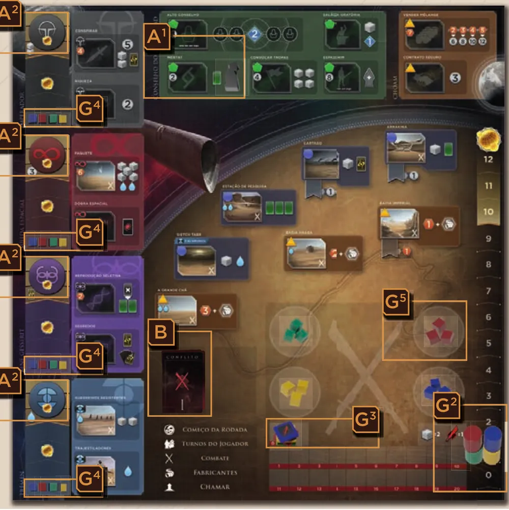
O tabuleiro montado, com as letras dos passos do manual: A1 (Mentat), A2 (Alianças), B (Conflito), G2 a G5 (marcadores e tropas dos jogadores). Ilustração: manual Galápagos p. 4 e 5
Ponha o Mentat deitado no espaço do Mentat, no Landsraad p. 4.
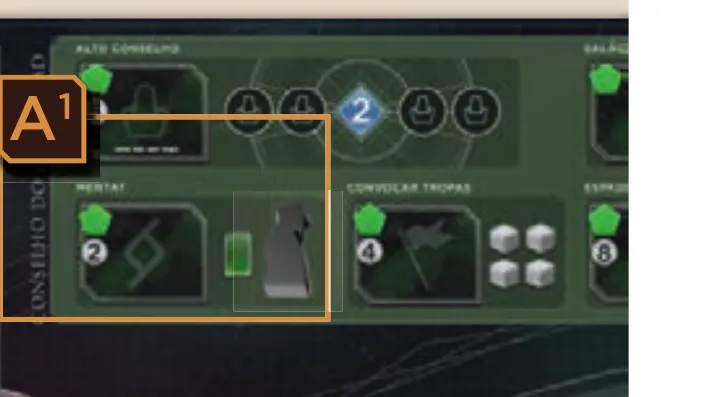
O Mentat deitado no espaço dele, no Landsraad (A1). Ilustração: manual Galápagos p. 4
Ponha os 4 marcadores de Aliança no alto das quatro Trilhas de Influência, um em cada: Imperador, Guilda Espacial, Bene Gesserit e Fremen p. 4.
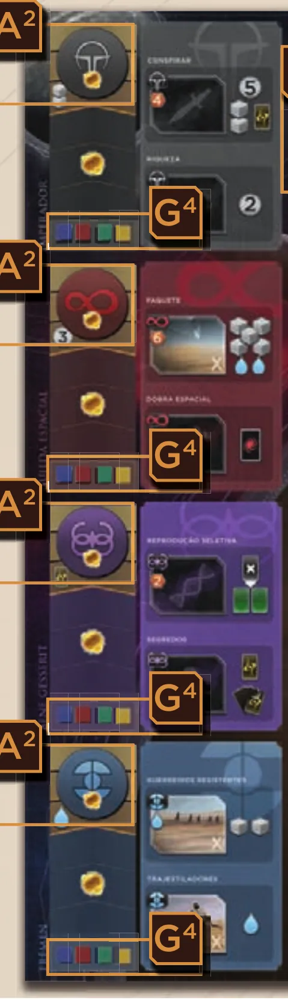
As quatro Facções: o marcador de Aliança no alto de cada trilha (A2) e os cubos dos jogadores no espaço de baixo (G4, passo 17). Ilustração: manual Galápagos p. 4
B. O Baralho de Conflitop. 4
Separe as Cartas de Conflito pelo verso: Conflito I, II e III.
Embaralhe as 4 de Conflito III e ponha todas viradas para baixo no espaço do Conflito, no tabuleiro.
Embaralhe as 10 de Conflito II e ponha 5, viradas para baixo, em cima das de Conflito III.
Embaralhe as 4 de Conflito I e ponha 1, virada para baixo, em cima de tudo. O baralho fica com 10 cartas. As 8 que sobraram voltam para a caixa sem que ninguém as veja p. 4.
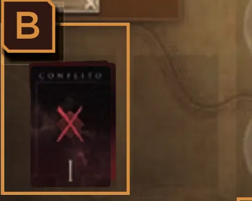
O Baralho de Conflito no seu espaço do tabuleiro (B), com uma carta de Conflito I no topo. Ilustração: manual Galápagos p. 4
C. As cartas em volta do tabuleirop. 4
Embaralhe as 40 cartas de Intriga e deixe o baralho virado para baixo ao lado do tabuleiro (C1).
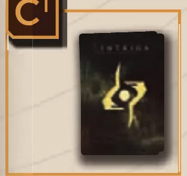
O Baralho de Intriga, virado para baixo (C1). Ilustração: manual Galápagos p. 4
Embaralhe o Baralho Imperial, deixe-o virado para baixo e abra 5 cartas viradas para cima: é a Linha Imperial, de onde se adquirem cartas (C2).
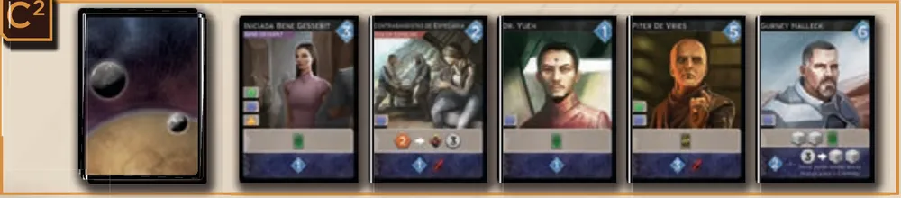
O Baralho Imperial e as 5 cartas abertas da Linha Imperial (C2). Ilustração: manual Galápagos p. 4
Ao lado da Linha Imperial, faça três pilhas com as cartas da Reserva, viradas para cima: Elo com Arrakis, A Especiaria Deve Fluir e Dobra Espacial (C3).
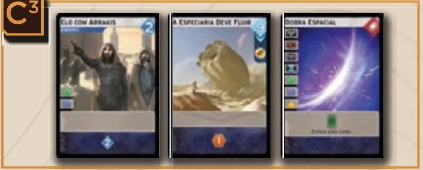
As três pilhas da Reserva: Elo com Arrakis, A Especiaria Deve Fluir e Dobra Espacial (C3). Ilustração: manual Galápagos p. 5
D, E e F. Líder, baralho e recursosp. 4 e 5
Cada jogador recebe um Líder, escolhido ou sorteado, e o põe à sua frente (D). Depois do nome, cada Líder tem de um a três pequenos ícones brancos: quanto mais ícones, mais complexo. Na primeira partida, o manual recomenda os de um ícone só: Paul Atreides, Glossu "A Fera" Rabban, Conde Memnon Thorvald ou Conde Ilban Richese p. 4.
Cada jogador embaralha o seu baralho inicial de 10 cartas e o põe virado para baixo à esquerda do Líder (E). As 10 cartas são iguais para todos: Argumento Convincente (2), Adaga (2), Diplomacia (1), Duna, o Planeta Deserto (2), Reconhecimento (1), Buscar Aliados (1) e Anel do Sinete (1) p. 3 e 5.
Cada jogador pega 1 água para o seu estoque (F1). A preparação não dá mais nada: ninguém começa com Solari, especiaria ou Intriga p. 5. Ao lado do tabuleiro, monte o banco com os marcadores de Solari, de especiaria e o resto da água (F2). Eles são considerados infinitos: se acabarem, use outra coisa no lugar p. 5.
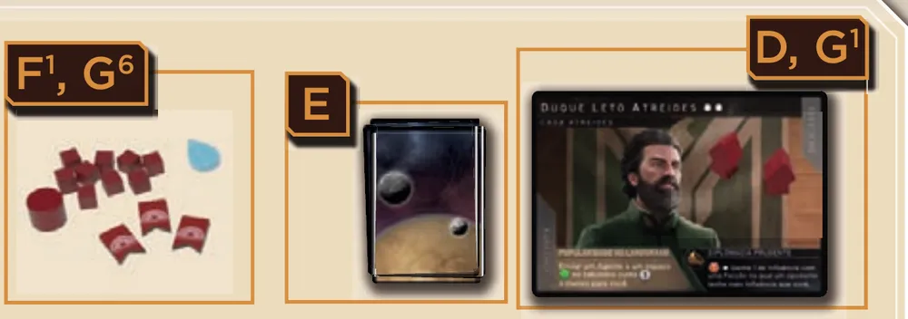
O estoque de um jogador: água e peças (F1, G6), baralho inicial (E) e Líder com 2 Agentes (D, G1). Ilustração: manual Galápagos p. 5
O Líder e o Anel do Sinete. Cada Líder tem duas habilidades p. 6. A da esquerda vale durante a partida inteira, do jeito que a carta descreve. A da direita, marcada com o ícone do Anel do Sinete, só se ativa quando você joga a carta Anel do Sinete do seu baralho num Turno do Agente: ela manda o Agente como qualquer carta e, além disso, aciona essa habilidade p. 6 e 16.
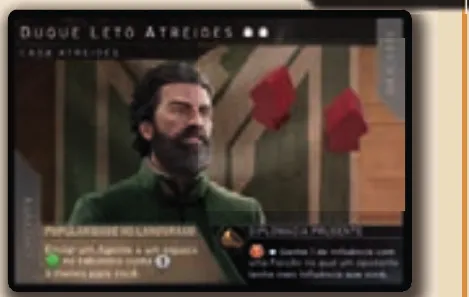
Duque Leto Atreides: os dois ícones brancos depois do nome indicam a complexidade; embaixo, à esquerda, a habilidade que vale sempre; à direita, a do Anel do Sinete. Ilustração: manual Galápagos p. 5
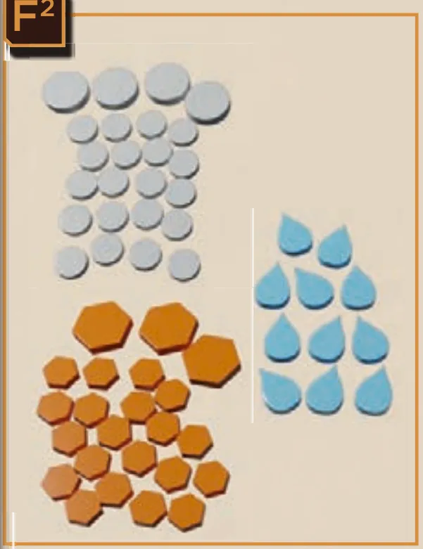
O banco: Solari, especiaria e água (F2). Ilustração: manual Galápagos p. 5
G. As peças de cada corp. 5
Cada jogador escolhe uma cor e pega todos os componentes dela.
Ponha 2 Agentes sobre o seu Líder. O terceiro, o Espadachim, fica perto do tabuleiro: ele só entra no jogo se você o conquistar no espaço Espadachim, que custa 8 Solaris (G1; Guia).
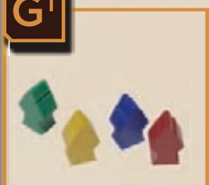
Os Agentes das quatro cores (G1). Ilustração: manual Galápagos p. 5
Ponha um disco na Trilha de Pontuação: no espaço 1 com 4 jogadores, no espaço 0 com 3 (G2). O outro disco é o de Conselheiro e fica no estoque.
Ponha o marcador de Combate no espaço 0 da Trilha de Combate, com o lado da espada, sem o +20, para cima (G3; p. 5). O lado +20 só se usa quando a força passa de 20 p. 11.
Ponha 4 cubos, um no espaço de baixo de cada Trilha de Influência (G4).
Os outros 12 cubos são as suas tropas: ponha 3 na guarnição, o círculo do tabuleiro mais perto de você (G5). As outras 9 ficam no estoque.
Deixe o resto no seu estoque, à vista de todos: tropas, os 3 marcadores de Controle e o disco de Conselheiro (G6).
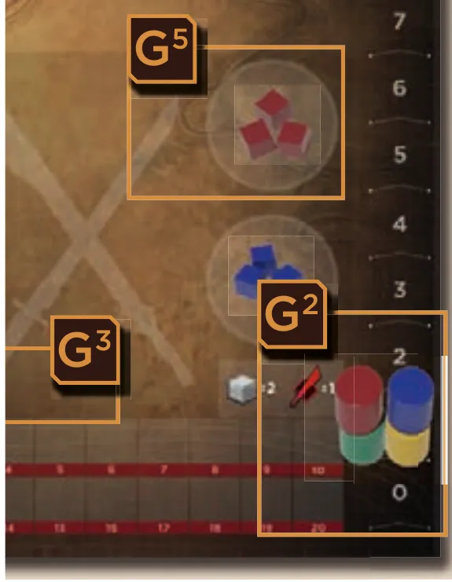
Discos de Pontos das quatro cores no espaço 1, numa partida de 4 (G2), e uma guarnição com 3 tropas (G5). Ilustração: manual Galápagos p. 5
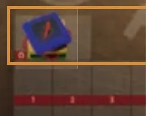
Os marcadores de Combate no espaço 0 da Trilha de Combate, com o lado da espada para cima (G3). Ilustração: manual Galápagos p. 4
H. Quem começap. 5
Sorteiem o primeiro jogador. Ele pega o marcador de Primeiro Jogador (H). A vez segue no sentido horário p. 8.
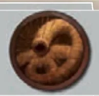
O marcador de Primeiro Jogador (H). Ilustração: manual Galápagos p. 5
O que muda com o número de jogadoresp. 5 e 12:
Jogadores
Disco de Pontos começa em
Recompensas do Conflito
Casa Hagal
3
0
1ª e 2ª
não
4
1
1ª, 2ª e 3ª
não
2
0
1ª e 2ª (FAQ)
sim, com preparação própria (abaixo)
O que volta para a caixa: as 8 Cartas de Conflito que sobraram, sem olhar p. 4. Por dedução, também as cores sem dono, a Casa Hagal (com 3 ou 4) e os marcadores do Barão, se ninguém joga com ele p. 3.
Partida de 2 jogadores: a Casa Hagal (folheto "Cartas da Casa Hagal", p. 1)
Com 2 jogadores, monte a mesa como acima (discos de Pontos no 0) e acrescente um terceiro participante automático, a Casa Hagal. Ela não junta recursos, não monta baralho, não ganha recompensas nem Pontos de Vitória: só ocupa espaços e disputa os Conflitos.
Escolha uma cor para a Casa Hagal. Ponha um cubo dela no espaço de baixo de cada Trilha de Influência; o resto dos cubos fica no estoque dela. Ela começa sem tropas na guarnição.
Tire do baralho da Casa Hagal as três cartas de Arrakina marcadas "1J" no canto superior direito. Embaralhe as outras e deixe o baralho virado para baixo, com os três Agentes dela, perto do estoque dela.
Quando ela age: logo depois de cada Turno do Agente do Primeiro Jogador, enquanto ela tiver Agente no estoque. Por isso ela pode fazer 2 turnos numa rodada e 3 na seguinte.
O que ela faz: revele a carta do topo do baralho dela. Ela manda um Agente ao espaço da carta, se estiver vazio; se estiver ocupado, ignore a carta e revele outra até achar um vazio. Se o baralho acabar ou sair a carta Reembaralhar, embaralhe todas as cartas dela na hora.
Ela ignora custo e efeito do espaço e faz só o que a carta mostra: avança na trilha indicada (sem bônus de Influência, mas fazendo a Aliança se puder); recruta 1 tropa por ícone de tropa, que vai direto ao Conflito se o espaço for de Combate e à guarnição se não for; nas cartas Minerar Especiaria, segue a carta e devolve ao banco a especiaria bônus do espaço.
Em espaço de Combate, ela também envia até 2 tropas da guarnição ao Conflito, mesmo que a carta não recrute nada.
No Combate: no começo da fase, se tiver tropa no Conflito, revele a carta do topo do baralho dela e avance o marcador de Combate dela pelo número de espadas da parte de baixo; ignore o resto. Depois os jogadores jogam as Intrigas de Combate.
Recompensas: ela não recebe nenhuma nem ganha controle. Se vencer o Conflito de um espaço controlado por um jogador, tire o marcador de Controle desse jogador.
Cartas e espaços que afetam os oponentes também a afetam, se ela tiver o que é pedido.
Duas coisas o folheto não diz com todas as letras. Como ela só age depois dos Turnos do Agente do Primeiro Jogador, quando ele faz o Turno de Revelar ela para de agir nesta rodada. E, pela FAQ oficial, as recompensas seguem as mesmas regras de uma partida de 3: se a Casa Hagal ficar em 1º, os jogadores seguem com a posição que tiverem; a dela fica sem dono.
Antes de começar, confira (3 ou 4 jogadores): Mentat deitado no Landsraad; 4 Alianças no alto das trilhas; Baralho de Conflito com 10 cartas (1 de I, 5 de II, 4 de III); Intriga embaralhada; Linha Imperial com 5 cartas; três pilhas da Reserva; cada jogador com Líder, baralho de 10 à esquerda, 1 água, 2 Agentes no Líder, Espadachim ao lado do tabuleiro, disco de Pontos no 0 (no 1 com 4 jogadores), marcador de Combate no 0, 4 cubos nas trilhas e 3 tropas na guarnição; Primeiro Jogador sorteado.
Partida de 4 jogadores. O que está errado nesta mesa?
Com 4 jogadores, o disco de Pontos começa no espaço 1; só com menos jogadores ele começa no 0 p. 5.
Comece a jogar em 4 minutos
Meta: em 4 minutos de leitura, montar a mesa e jogar o seu primeiro turno sem abrir o manual.
A ideia do jogo
Cada rodada, você recebe 5 cartas e as usa de dois jeitos. Jogando uma de cada vez, cada carta manda um Agente a um espaço do tabuleiro, onde você pega recursos, tropas ou apoio das Facções. As cartas que sobram são reveladas no fim, para adquirir cartas melhores com Persuasão e dar força às suas tropas no Conflito da rodada. Quem chega a 10 Pontos de Vitória ativa o fim, e vence quem tiver mais p. 6.
Monte a mesa
A montagem completa, com figuras, está na seção "Montar a mesa passo a passo", logo acima. O essencial p. 4 e 5:
Tabuleiro no meio, Mentat deitado no Landsraad, Alianças no alto das trilhas.
Baralho de Conflito de 10 cartas (I em cima, cinco de II, quatro de III); Intriga embaralhada; Linha Imperial com 5 cartas; três pilhas da Reserva.
Cada jogador: Líder, baralho inicial embaralhado, 1 água, 2 Agentes no Líder, Espadachim ao lado do tabuleiro, 4 cubos nas trilhas, 3 tropas na guarnição, marcador de Combate no 0, disco de Pontos no 0 (no 1 com 4 jogadores).
Sorteiem quem começa. A vez segue no sentido horário.
Seu primeiro turno
A rodada tem cinco fases: Começo da Rodada, Turnos do Jogador, Combate, Fabricantes e Chamar p. 8. No Começo, revela-se a Carta de Conflito do topo (o prêmio do Combate) e cada jogador compra 5 cartas do seu baralho. Nos Turnos do Jogador, cada um faz um turno e passa a vez ao vizinho da esquerda, até todos terem revelado. No seu primeiro turno, você faz um Turno do Agentep. 8 e 9:
Jogue uma carta da mão virada para cima à sua frente.
Escolha um ícone de Agente da carta, na coluna da esquerda, e mande um Agente do Líder a um espaço com esse ícone no canto superior esquerdo.
O espaço precisa estar vazio. Agente de qualquer jogador bloqueia.
Pague o custo do espaço antes, se houver. Sem pagar, não vai.
Receba o efeito do espaço e o da caixa do Agente da carta, na ordem que quiser. Espaço de Facção sobe seu cubo 1 espaço na trilha dela.
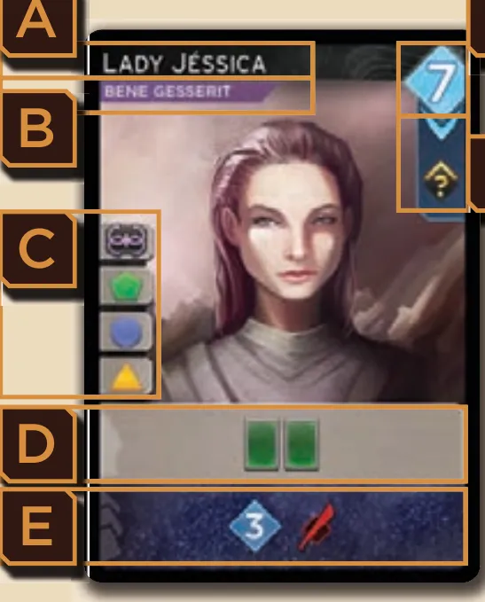
Anatomia da carta: nome (A), Facção (B), ícones de Agente (C), caixa do Agente (D), caixa de Revelar (E), custo em Persuasão (F) e efeito ao Adquirir (G). Ilustração: manual Galápagos p. 8
Quando acabarem seus Agentes, ou se preferir antes, o seu turno é o Turno de Revelar: você revela o resto da mão e usa só a parte de baixo dessas cartas (etapa 2).
Ainda não precisa saber
Custos com seta, Influência, Alianças e a tabela dos espaços: etapa 1 e etapa 4. O Turno de Revelar, a Persuasão e as cartas novas: etapa 2. Tropas no Conflito, força, Intrigas de Combate, recompensas e Fabricantes (os três desertos de especiaria, que acumulam bônus): etapa 3. Intrigas e o fim da partida: etapa 4.
Como a partida acaba
Ao fim de cada rodada, se alguém tiver 10 Pontos de Vitória ou mais, ou se o Baralho de Conflito tiver acabado, a partida termina. Vence quem tiver mais pontos p. 6 e 13.
Prefere ver? Um resumo de uma partida em 10 minutos. Ele complementa este guia; em caso de diferença, vale o manual.
DUNA IMPERIUM - Gameplay resumida em 10 minutos, canal Duque Board Games · abrir no YouTube
0Antes de tudo: o que é este jogoOpcional
Imagem: Dire WolfAbrir esta seção
Duna: Imperium junta construção de baralho com alocação de trabalhadores, inspirado no filme do estúdio Legendary e nos livros de Frank Herbert, Brian Herbert e Kevin J. Anderson p. 2. Cada jogador é o Líder de uma Casa Maior e disputa apoio político, especiaria e vitórias militares, medidas em Pontos de Vitória p. 6. O design é de Paul Dennen p. 15.
Duas ideias sustentam o resto:
A mesma mão serve duas vezes. Cada carta tem uma caixa do Agente, usada quando você a joga, e uma caixa de Revelar, usada se ela ficar na mão até o fim p. 8.
O baralho muda. Todos começam com as mesmas 10 cartas; as que você adquire mudam os espaços a que tem acesso e a força que leva ao Conflito p. 6 e 14.
1Como este guia ensinaOpcional
Imagem: Dire WolfAbrir esta seção
Quatro etapas, na ordem em que a rodada acontece: o Turno do Agente, o Turno de Revelar, o Conflito e o Combate, e por fim as Facções, as Intrigas e o fim da partida. Cada etapa traz Para entender (o porquê), Passo a passo (a regra exata), regras de caso especial a um toque e tarefas com ajuda que diminui: exemplo resolvido, complete e sua vez. Toque numa opção para ver a resposta e a explicação. No fim, uma avaliação diz o que reler, e uma folha de consulta vai para a mesa.
2Etapa 1: o Turno do Agente
Por que funciona assim
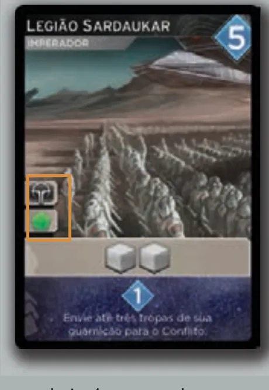
A carta Legião Sardaukar tem dois ícones de Agente, Imperador e Landsraad: ela pode mandar o Agente a um dos dois espaços do Imperador ou a um dos cinco do Landsraad, mas a um só. A caixa de Revelar dela envia tropas da guarnição ao Conflito (etapa 3). Ilustração: manual Galápagos p. 9
Os espaços do tabuleiro (Guia; ícones e números na ilustração do tabuleiro, p. 4 e 5). "Combate" marca os espaços que permitem enviar tropas ao Conflito (etapa 3).
Espaço
Ícone
Custo ou requisito
O que dá
Conspirar
Imperador
4 especiarias
+1 Imperador, 5 Solaris, 2 tropas, 1 Intriga
Riqueza
Imperador
+1 Imperador, 2 Solaris
Paquete (Combate)
Guilda Espacial
6 especiarias
+1 Guilda, 5 tropas, 2 águas
Dobra Espacial
Guilda Espacial
+1 Guilda, adquire 1 Dobra Espacial da Reserva
Reprodução Seletiva
Bene Gesserit
2 especiarias
+1 Bene Gesserit; exclua 1 carta para comprar 2 do seu baralho
Segredos
Bene Gesserit
+1 Bene Gesserit, 1 Intriga; quem tem 4 ou mais Intrigas lhe dá 1, ao acaso
Guerreiros Resistentes (Combate)
Fremen
1 água
+1 Fremen, 2 tropas
Trajestiladores (Combate)
Fremen
+1 Fremen, 1 água
Alto Conselho
Landsraad
5 Solaris
uma vez por partida; ver abaixo
Salão da Oratória
Landsraad
1 tropa; +1 Persuasão no seu Revelar enquanto o Agente estiver ali
Mentat
Landsraad
2 Solaris
compra 1 carta e pega o Mentat; ver abaixo
Convocar Tropas
Landsraad
4 Solaris
4 tropas
Espadachim
Landsraad
8 Solaris
uma vez por partida; ver abaixo
Vender Mélange
Comércio de Especiaria
2 a 5 especiarias
2 dão 6 Solaris, 3 dão 8, 4 dão 10, 5 dão 12; uma troca por turno
Contrato Seguro
Comércio de Especiaria
3 Solaris
Arrakina (Combate)
Cidade
1 tropa, compra 1 carta
Cartago (Combate)
Cidade
1 tropa, 1 Intriga
Estação de Pesquisa (Combate)
Cidade
2 águas
compra 3 cartas
Sietch Tabr (Combate)
Cidade
2 ou mais de Influência com os Fremen
1 tropa, 1 água
A Grande Chã (Combate)
Comércio de Especiaria
2 águas
3 especiarias + bônus acumulado
Bacia Hagga (Combate)
Comércio de Especiaria
1 água
2 especiarias + bônus acumulado
Bacia Imperial (Combate)
Comércio de Especiaria
1 especiaria + bônus acumulado
Regra adicional: Custo com setaRegra adicional: MentatRegra adicional: EspadachimRegra adicional: Alto ConselhoRegra adicional: Bônus de ControleRegra adicional: Comprar, adquirir, descartar, excluirRegra adicional: Laço FremenVer um exemplo resolvidoPratique esta etapa: exercícios com respostas
3Etapa 2: o Turno de Revelar e o seu baralho
Por que funciona assim
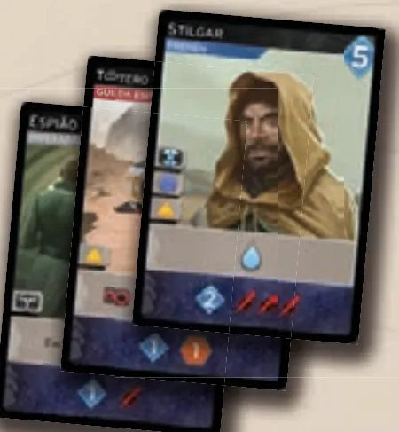
O Turno de Revelar de João: Espião Imperial, Tóptero do Contrabandista e Stilgar dão 4 de Persuasão e 4 espadas no total. Ilustração: manual Galápagos p. 11Regra adicional: Dobra EspacialRegra adicional: Força acima de 20Regra adicional: Carta comprada no RevelarVer um exemplo resolvidoPratique esta etapa: exercícios com respostas
4Etapa 3: o Conflito, o Combate e os Fabricantes
Por que funciona assimRegra adicional: Exceções que mandam tropas ao Conflito
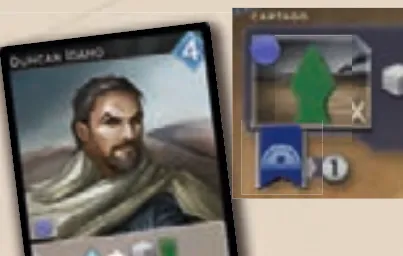
Abgail joga Duncan Idaho e manda o Agente a Cartago, onde está o marcador de Controle de João. Ilustração: manual Galápagos p. 10Sobre a edição: Três empatados no 1º, com 4 jogadores
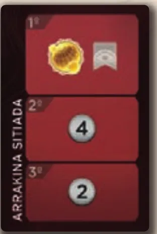
A carta Arrakina Sitiada: a 1ª recompensa dá 1 Ponto de Vitória e o controle de Arrakina; a 2ª, 4 Solaris; a 3ª, 2 Solaris. Ilustração: manual Galápagos p. 12
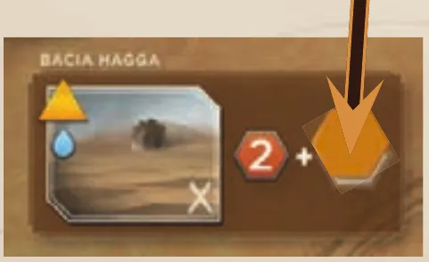
A Bacia Hagga dá 2 especiarias mais o bônus acumulado no ícone de Fabricante, para onde aponta a seta. Ilustração: manual Galápagos p. 13Regra adicional: Ganhar o controleRegra adicional: Defesa de quem controlaRegra adicional: "Quando você vence um Conflito"Regra adicional: Perder e recuarRegra adicional: Mentat como recompensaVer um exemplo resolvidoPratique esta etapa: exercícios com respostas
5Etapa 4: Facções, Intrigas e o fim da partida
Por que funciona assim
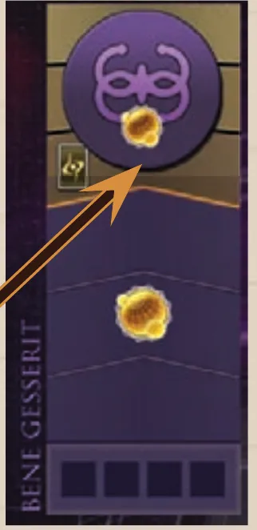
A trilha da Bene Gesserit: o Ponto de Vitória no espaço de 2 de Influência, o bônus (uma Intriga) no de 4, e o marcador de Aliança no alto. Ilustração: manual Galápagos p. 7Regra adicional: Ganhar 2 de Influência de uma vezRegra adicional: Perder a Aliança ao cairRegra adicional: Baralho de Intriga vazioRegra adicional: Último desempateRegra adicional: No máximo 10 rodadasVer um exemplo resolvidoPratique esta etapa: exercícios com respostas
6Situações especiaisOpcional
Imagem: Dire WolfAbrir esta seçãoRegra adicional: Turno do Agente é opcionalRegra adicional: Chamar um AgenteRegra adicional: Agente que sai de um FabricanteRegra adicional: Cartas que mudam as regrasSobre a edição: Nome em inglêsDica
7Avaliação finalOpcional
Imagem: Dire WolfAbrir esta seção
Responda sem consultar. Cada resposta diz o que reler.
1. Quantas cartas tem o Baralho de Conflito na montagem, e qual fica no topo?
10, com Conflito I em cima, cinco de II no meio e quatro de III embaixo p. 4. Releia a montagem.
2. Sua carta tem os ícones Fremen e Cidade. Quantos Agentes ela manda?
Um. Você escolhe um ícone só p. 9. Releia a etapa 1.
3. No Turno de Revelar, quais caixas de Revelar você usa?
Só as reveladas agora, não as jogadas antes nos Turnos do Agente p. 11. Releia a etapa 2.
4. Você vai a Convocar Tropas e recruta 4. Quantas vão ao Conflito?
Nenhuma. O espaço não é de Combate; as tropas ficam na guarnição p. 10. Releia a etapa 3.
5. Partida de 3 jogadores. Ana e Bruno empatam no 1º lugar do Combate. O que recebem?
A 2ª cada um; ninguém vence o Conflito p. 12. Releia a etapa 3.
6. Fim da partida, empate em pontos e em especiaria. O que decide?
Solari, depois água, depois tropas na guarnição p. 13. Releia a etapa 4.
8Para consultar durante a partida
Imagem: Dire Wolf
Montagem: ver "Antes de começar, confira", no fim da montagem.
Rodada: 1. Começo: revele o Conflito, cada um compra 5. 2. Turnos do Jogador, um turno por vez, sentido horário, até todos revelarem. 3. Combate. 4. Fabricantes. 5. Chamar.
Turno do Agente: uma carta, um ícone, um espaço vazio com o mesmo ícone. Custo antes. Efeito do espaço + caixa do Agente + Influência (espaço de Facção), na ordem que quiser. Seta: opcional, uma vez.
Turno de Revelar: revele a mão; caixas de Revelar só dessas cartas; adquira com Persuasão (Linha, Elo com Arrakis, A Especiaria Deve Fluir) para o descarte; força = 2 por tropa no Conflito + 1 por espada revelada (0 sem tropa); limpe tudo para o descarte.
Tropas: recrutar = estoque para guarnição. Enviar ao Conflito, em regra, só em espaço de Combate: as recrutadas no turno + até 2 da guarnição. Exceções: cartas que mandam enviar e a tropa de defesa de quem controla o espaço do Conflito.
Combate: Intrigas de Combate em rodadas de passe; 1ª e 2ª recompensa (3ª só com 4); força 0 não ganha; empate no 1º: 2ª para cada; empate no 2º: 3ª para cada. Tropas voltam ao estoque.
Fabricantes: +1 especiaria bônus em cada um sem Agente.
Influência: 2 = 1 ponto (perde se cair); 4 = bônus; primeiro a 4 = Aliança e 1 ponto; só quem passa mais alto toma.
Fim: 10 pontos ou Conflito vazio, verificado no Chamar. Intrigas de Fim de Jogo, depois mais pontos. Empate: especiaria, Solari, água, tropas na guarnição.
Regras conferidas no livro de regras da edição brasileira da Galápagos (Asmodee Brasil), arquivo DUN001_regras_v1.0, de 16 páginas, da Biblioteca de Downloads da Asmodee Brasil, e nos dois folhetos que vêm na caixa, o Guia dos Espaços no Tabuleiro e as Cartas da Casa Hagal, na versão em português publicada pela Dire Wolf. As páginas citadas são as do livro de regras; "Guia" é o folheto dos espaços. Este guia ensina o jogo base para 3 e 4 jogadores e, na montagem, a partida de 2 com a Casa Hagal; o modo solo fica no folheto. Não vale para o Duna: Imperium Uprising, que é outro jogo.